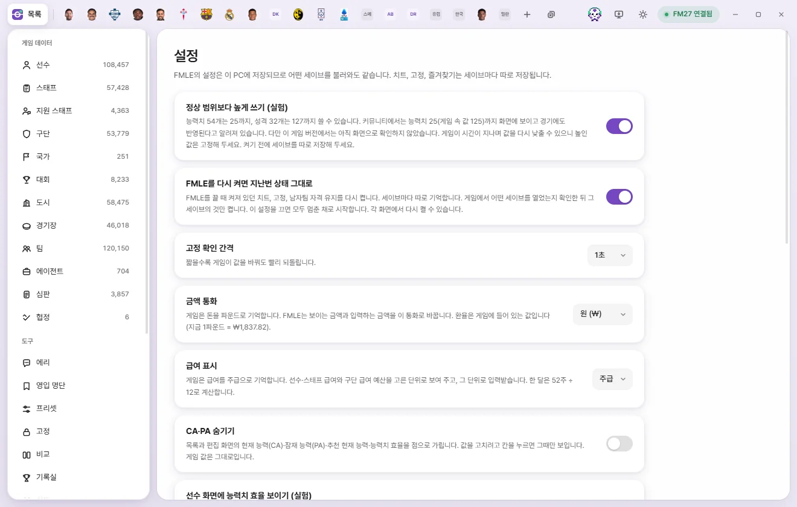
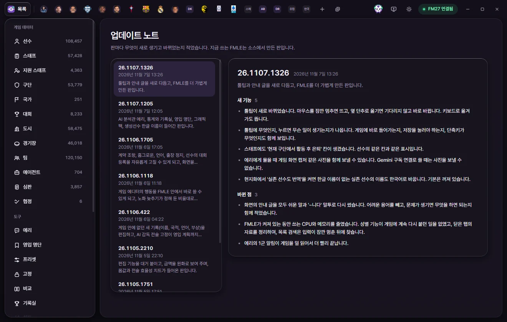

도구
설정과 업데이트 노트
설정 화면의 모든 항목이 무엇을 바꾸는지, 업데이트 노트 화면에서 판마다 바뀐 것을 보는 법을 설명합니다.
설정 화면
왼쪽 도구의 설정을 누릅니다. 설정은 이 PC에 저장되므로 어떤 세이브를 불러와도 같습니다. 치트, 고정, 즐겨찾기는 세이브마다 따로 저장됩니다(세이브마다 따로 기억하는 것).
설정은 바꾸는 즉시 적용되고 저장됩니다. 저장 단추는 없습니다. 게임 값은 바꾸지 않습니다.


| 항목 | 처음 값 | 하는 일 |
|---|---|---|
| 정상 범위보다 높게 쓰기 (실험) | 끔 | 일부 값을 게임의 보통 최대보다 높게 쓸 수 있게 합니다. 아래 따로 설명 |
| FMLE를 다시 켜면 지난번 상태 그대로 | 켬 | FMLE를 끌 때 켜져 있던 치트, 고정, 남자팀 자격 유지를 다시 켭니다. 아래 따로 설명 |
| 고정 확인 간격 | 1초 | 0.5초, 1초, 2초, 5초. 짧을수록 게임이 고정한 값을 바꿔도 빨리 되돌립니다(고정) |
| 금액 통화 | 원 | 원, 파운드, 유로, 달러, 엔. 보이는 금액과 입력하는 금액을 이 통화로 바꿉니다 |
| 급여 표시 | 주급 | 주급, 월급, 연봉. 선수·스태프 급여와 구단 급여 예산을 이 단위로 보이고 입력받습니다 |
| CA·PA 숨기기 | 끔 | 목록과 편집 화면의 현재 능력(CA)·잠재 능력(PA)·추천 현재 능력·능력치 효율을 점으로 가립니다 |
| 선수 화면에 능력치 효율 보이기 (실험) | 끔 | 선수 화면 위쪽 CA·PA·RCA 옆에 '현재 효율 / 잠재 효율'을 보여 줍니다 |
| 유리 효과 | 끔 | 창의 막대와 패널이 유리처럼 뒤를 비춥니다 |
| 게임에 연결되면 목록 바로 읽기 | 켬 | 끄면 목록을 열거나 다시 읽기를 누를 때 읽습니다 |
| 시즌 끝 기록 남기기 | 켬 | 선수 기록을 세이브별로 남깁니다. 아래 따로 설명 |
| 그래픽 팩 | 페이스팩·로고·유니폼 팩 폴더. 그래픽 팩에서 설명 | |
| 설정 초기화 | 처음 상태로 단추. 아래 따로 설명 | |
| 이 게임 버전 | FMLE가 아는 게임 버전, 아는 종류·값의 수, 쓸 수 있는 값의 수 |
정상 범위보다 높게 쓰기 (실험)
켜면 능력치 같은 일부 값을 보통 최대(능력치 20)보다 높게 쓸 수 있습니다. 항목 설명에 어떤 값을 얼마까지 쓸 수 있는지 나옵니다(예: '능력치 n개는 25까지').
- 커뮤니티에서는 능력치 25(게임 속 값 125)까지 화면에 보이고 경기에도 반영된다고 알려져 있습니다. 다만 이 게임 버전에서는 아직 화면으로 확인하지 않았습니다.
- 게임이 시간이 지나며 값을 다시 낮출 수 있으니 높인 값은 고정해 두세요.
- 이 게임 버전에서 안전한지 확인하지 않은 값만 있으면 스위치를 켤 수 없습니다.
- 끄면 다시 원래 범위까지만 씁니다. 저장하지 않은 편집 중 범위를 넘는 값은 최대값으로 내려옵니다.
FMLE를 다시 켜면 지난번 상태 그대로
- 켜 두면 FMLE를 끌 때 켜져 있던 치트, 고정, 남자팀 자격 유지를 다음에 다시 켭니다. 게임에서 어떤 세이브를 열었는지 확인한 뒤 그 세이브의 것만 켭니다.
- 끄면 모두 멈춘 채로 시작합니다. 각 화면에서 다시 켤 수 있습니다.
- 현지화의 자동 번역과 경기 외형 적용도 이 설정을 따릅니다.
호환 모드
- 스킨의 숨은 능력치 표시, 재생성·은퇴 패치처럼 다른 모드가
game_plugin.dll을 조금 고쳤어도 연결합니다. 처음에는 꺼져 있습니다. - 파일 구조가 FM27 원본과 같고 바뀐 곳이 적을 때만 연결합니다. 다른 게임 판이나 크게 바뀐 파일에는 연결하지 않습니다.
- 값 읽기와 편집, 고정은 그대로 됩니다. 게임 코드를 바꾸는 FMLE 기능 중 다른 모드가 같은 곳을 고친 것만 꺼집니다. 꺼진 기능은 연결 상태 창의 꺼진 기능에 나오고, 치트 화면의 그 줄에 못 켬으로 나옵니다.
- 호환 모드로 연결하면 연결 표시가 FM27 연결됨 · 호환으로 바뀝니다.
- 남자팀 자격 유지는 호환 모드에서 쓸 수 없습니다.
금액 통화와 급여 표시
- 게임은 돈을 파운드로 기억합니다. 환율은 게임에 들어 있는 값을 씁니다. 설명에 지금 '1파운드 = ₩…'이 보입니다.
- 게임은 급여를 주급으로 기억합니다. 한 달은 52주 ÷ 12로 계산합니다.
- 둘 다 화면에 보이는 단위만 바꿉니다. 게임에는 그대로 파운드·주급으로 저장됩니다.
CA·PA 숨기기
가린 칸은 값을 고치려고 누를 때만 보입니다. 게임 값은 그대로입니다. 바꾸면 'CA·PA를 가렸습니다' 알림이 뜹니다.
선수 화면에 능력치 효율 보이기 (실험)
능력치가 그 포지션에서 같은 능력치 예산으로 낼 수 있는 가장 좋은 분배에 얼마나 가까운지를 나타냅니다. 한 팀의 FM27 능력치 시험 결과와 RCA로 FMLE가 계산한 값입니다. 이 설정과 상관없이 목록과 선수단에는 '능력치 효율', '현재 효율', '잠재 효율' 열을 더할 수 있습니다.
유리 효과
목록을 빠르게 넘길 때 화면이 버벅일 수 있어서 처음에는 꺼 둡니다.
시즌 끝 기록 남기기
게임 날짜가 일주일 지날 때마다 이번 시즌에 뛴 모든 선수의 기록을 세이브별로 남깁니다. 능력 점수, 카드 6칸, 성적표, 시즌 기록(대회별 숫자, 실제로 선 자리)이 남고, 시즌이 바뀌면 그 시즌의 마지막 값이 남습니다.
- 그래서 통계 화면에 지난 시즌 능력 점수가 보이고, 은퇴한 선수도 기록실에 남습니다.
- 게임 값은 읽기만 합니다. 한 시즌에 몇 MB를 FMLE 데이터 폴더에 씁니다.
- 끄면 그동안 남긴 기록은 그대로 두고 새로 남기지 않습니다. FMLE가 켜져 있지 않은 시즌도 남지 않습니다.
설정 초기화
처음 상태로를 누르면 확인한 뒤 이 화면의 설정과 목록마다 고른 열·정렬·필터를 처음 상태로 돌립니다. 프리셋, 저장한 필터, 고정, 즐겨찾기는 그대로 둡니다. 게임 값도 바꾸지 않습니다.
업데이트 노트 화면
왼쪽 도구의 업데이트 노트를 누르면 판마다 무엇이 새로 생기고 바뀌었는지 볼 수 있습니다.


- 왼쪽 목록: 판 번호, 올린 날짜, 한 줄 요약이 최신부터 보입니다. 지금 쓰는 판에는 지금 쓰는 판 표시가 붙습니다. 아직 올리지 않은 다음 판의 내용은 '다음 판'으로 보입니다.
- 오른쪽: 고른 판의 내용이 '새 기능', '고친 점' 같은 묶음으로 나옵니다.
- 판 번호는 만든 날짜와 시각입니다. 26.1107.1326은 2026년 11월 7일 13시 26분에 만든 판입니다.
- 화면 위에 '지금 쓰는 판은 …입니다'가 보입니다.
새 판 알림과 설치는 설치·업데이트·지우기를 보세요.